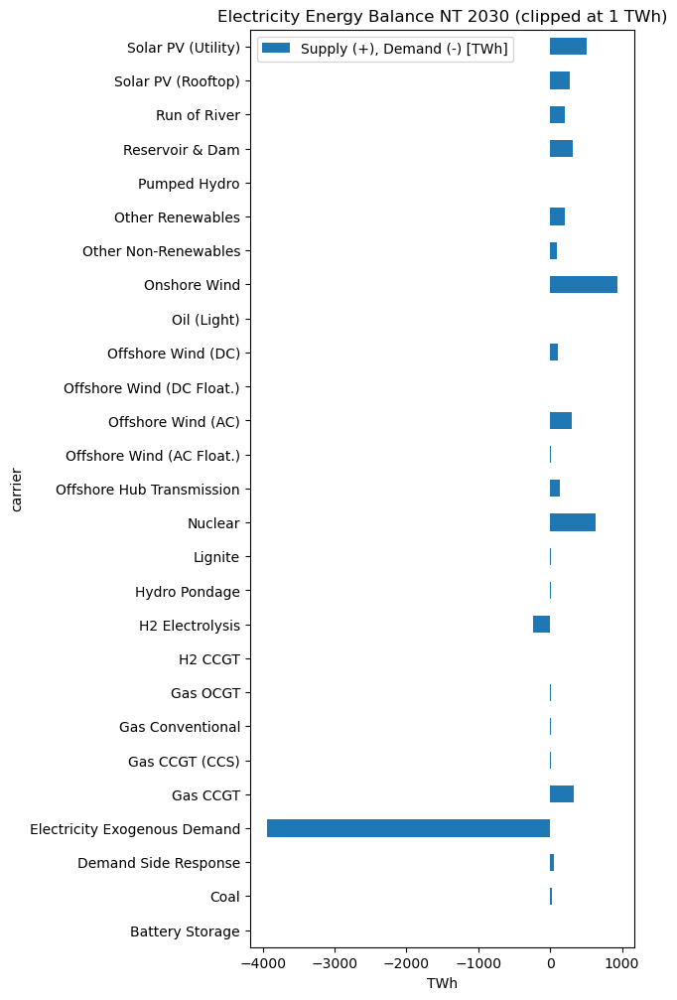
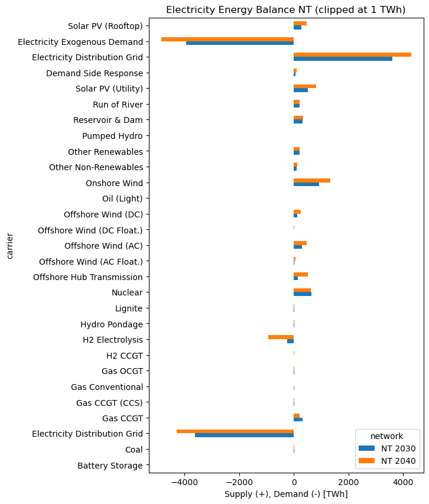
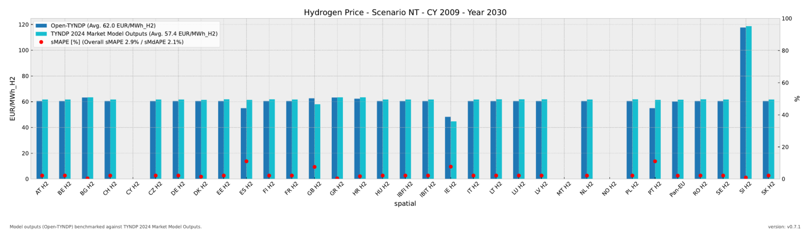
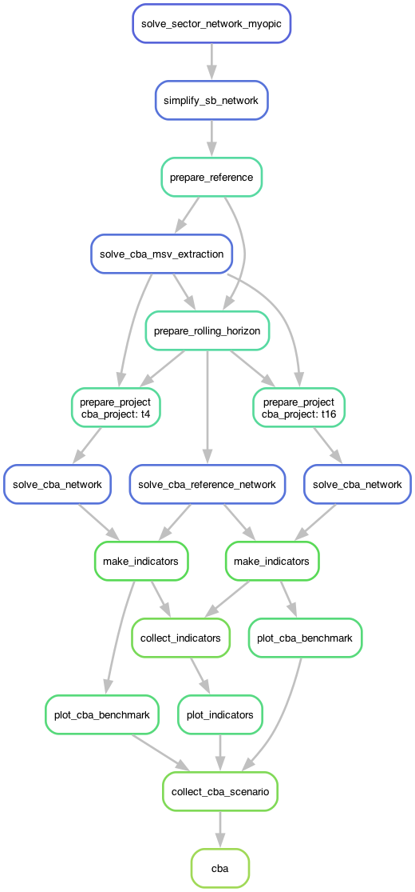
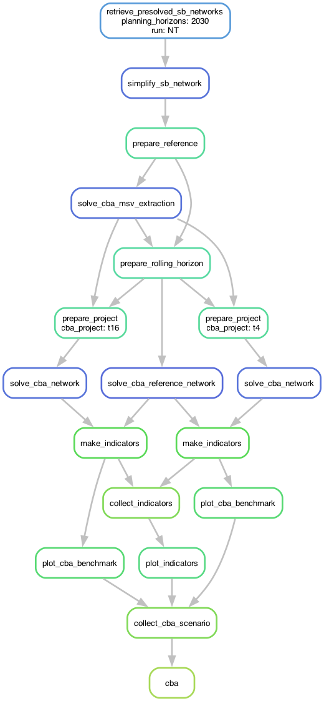

Workshop 4: Open-TYNDP Outcomes and CBA Workflows#
Note
At the end of this notebook, you will be able to:
1. Inspect Open-TYNDP benchmarks
Navigate and analyze Open-TYNDP NT scenario outcomes using PyPSA’s statistics module
Investigate latest networks using PyPSA-Explorer
Compare your findings with the benchmarking framework
2. Run CBA workflows
Modify the CBA configuration for the targeted project and/or climate year
Learn how to execute CBA analysis coupled to or detached from the Scenario Building workflow
Note
If you have not set up Python on your computer, you can execute this tutorial in your browser via Google Colab. Click the rocket button in the top right corner and launch “Colab”. If that doesn’t work, download the .ipynb file and import it in Google Colab.
Then install the required packages by uncommenting the cell below.
# uncomment for running this notebook on Colab
# !pip install pypsa==1.2.1 pypsa-explorer pandas matplotlib numpy pdf2image cartopy
# !apt-get install poppler-utils
import os
from datetime import datetime
import pandas as pd
import pypsa
import shutil
import zipfile
from urllib.request import urlretrieve
from pdf2image import convert_from_path
from pdf2image.exceptions import PDFPageCountError
from IPython.display import SVG, Code, IFrame, Image, display
import matplotlib.pyplot as plt
from pypsa_explorer import create_app
from pathlib import Path
import cartopy.crs as ccrs
from pypsa.plot.maps.static import (
add_legend_lines,
)
pypsa.set_option("params.statistics.nice_names", True)
pypsa.set_option("params.statistics.drop_zero", True)
pypsa.set_option("params.statistics.round", 3)
plt.rcParams["figure.figsize"] = [14, 7]
clip = 1 # TWh
def unzip_with_timestamps(zip_path, extract_to, keep_zip=True):
"""Unzip a file while preserving original file timestamps."""
with zipfile.ZipFile(zip_path, "r") as zip_ref:
for member in zip_ref.infolist():
# Extract the file
zip_ref.extract(member, extract_to)
# Get the extracted file path
extracted_path = os.path.join(extract_to, member.filename)
# Get the modification time from the zip file
date_time = datetime(*member.date_time)
timestamp = date_time.timestamp()
# Set both access and modification times
os.utime(extracted_path, (timestamp, timestamp))
if not keep_zip:
os.remove(zip_path)
As in previous workshops, we first need to retrieve some files that we’ll need today.
urls = {
"data/results-0.7.1.zip": "https://storage.googleapis.com/open-tyndp-data-store/outcomes/0.7.1/results-0.7.1.zip",
"scripts/_helpers.py": "https://raw.githubusercontent.com/open-energy-transition/open-tyndp-workshops/refs/heads/feat/workshop-4/open-tyndp-workshops/scripts/_helpers.py",
}
os.makedirs("data", exist_ok=True)
os.makedirs("scripts", exist_ok=True)
for name, url in urls.items():
if os.path.exists(name):
print(f"File {name} already exists. Skipping download.")
else:
print(f"Retrieving {name} from storage.")
urlretrieve(url, name)
print(f"File available in {name}.")
to_dir = "data/results-0.7.1"
if not os.path.exists(to_dir):
print(f"Unzipping data/results-0.7.1.zip.")
unzip_with_timestamps("data/results-0.7.1.zip", "data/results-0.7.1")
print(f"Latest NT results for Open-TYNDP v0.7.1 are available in '{to_dir}'.")
print("Done")
Retrieving data/results-0.7.1.zip from storage.
File available in data/results-0.7.1.zip.
File scripts/_helpers.py already exists. Skipping download.
Unzipping data/results-0.7.1.zip.
Latest NT results for Open-TYNDP v0.7.1 are available in 'data/results-0.7.1'.
Done
And we’ll also import some handy helper functions that we introduced in the last workshops.
from scripts._helpers import (
show_benchmarks,
display_code_lines,
run_pypsa_explorer_in_colab,
)
This notebook is running locally !
Scenario Building#
Explore NT outcomes using the PyPSA.statistics module#
n.statistics provides a consistent, high-level API that handles component iteration, port mapping, and carrier grouping automatically.
Tip
n.stats is available as a shorthand alias for n.statistics.
Each method can be called individually or explored via the summary table:
Category |
Methods |
|---|---|
Costs |
|
Capacity |
|
Energy |
|
Market |
|
Every method accepts the same filtering and grouping parameters:
Parameter |
Description |
|---|---|
|
String, list, or callable — how to group results (default: |
|
Aggregation function ( |
|
|
|
Filter to specific component types |
|
Filter by carrier name (internal name) |
|
Filter by the carrier of the bus |
|
Use human-readable carrier names (default: |
Warning
prices() has a simplified interface — groupby and groupby_time are booleans,
and it does not accept carrier or components.
The full PyPSA.statistics API documentation is available in the pypsa documentation. Additionally, you can find two video tutorials on PyPSA meets Earth’s youtube channel (part 1, part 2) for more comprehensive information and examples on how to use the statistics module. This learning material is open-source and available on GitHub.
Reminder: Extracting insights from the network#
Let’s load the latest Open-TYNDP NT scenario outcomes (v0.7.1) again and explore them using the statistics module.
# Load latest NT scenario networks
base_path = "data/results-0.7.1/NT-cy2009-20260520/networks/"
def import_network(fn: str):
n = pypsa.Network(fn)
n.carriers.loc["none", "color"] = "#000000"
return n
# Load networks directly into dictionary for PyPSA-Explorer
networks = {
"NT 2030": import_network(base_path + "base_s_all___2030.nc"),
"NT 2040": import_network(base_path + "base_s_all___2040.nc"),
}
WARNING:pypsa.network.io:Importing network from PyPSA version v1.2.1 while current version is v1.2.2. Read the release notes at `https://go.pypsa.org/release-notes` to prepare your network for import.
INFO:pypsa.network.io:Imported network 'PyPSA-Eur (tyndp)' has buses, carriers, generators, global_constraints, links, loads, shapes, storage_units, stores, sub_networks
WARNING:pypsa.network.io:Importing network from PyPSA version v1.2.1 while current version is v1.2.2. Read the release notes at `https://go.pypsa.org/release-notes` to prepare your network for import.
INFO:pypsa.network.io:Imported network 'PyPSA-Eur (tyndp)' has buses, carriers, generators, global_constraints, links, loads, shapes, storage_units, stores, sub_networks
To start of we’ll have a look at the network for the NT 2030 scenario.
scenario = "NT 2030"
For convenience, let’s save the statistics accessor in a variable s.
s2030 = networks[scenario].stats
You can easily get a comprehensive overview of all system-level metrics at once.
s2030()
| Optimal Capacity | Installed Capacity | Supply | Withdrawal | Energy Balance | Transmission | Capacity Factor | Curtailment | Capital Expenditure | Operational Expenditure | Revenue | Market Value | ||
|---|---|---|---|---|---|---|---|---|---|---|---|---|---|
| Generator | Biogas | 4.263155e+08 | 4.263155e+08 | 4.251475e+08 | 0.000000e+00 | 4.251475e+08 | 0.0 | 0.000114 | 3.723867e+12 | 0.000000e+00 | 3.351152e+10 | 7.059275e+09 | 16.604296 |
| Coal Primary | 5.825227e+04 | 0.000000e+00 | 1.026519e+08 | 0.000000e+00 | 1.026519e+08 | 0.0 | 0.201717 | 4.062399e+08 | 0.000000e+00 | 6.661672e+08 | 6.661649e+08 | 6.489550 | |
| Demand Shedding | inf | inf | 9.059174e+04 | 0.000000e+00 | 9.059174e+04 | 0.0 | 0.000000 | inf | 0.000000e+00 | 2.717762e+08 | 2.715243e+08 | 2997.211283 | |
| Demand Side Response | 5.986636e+04 | 5.986636e+04 | 5.394429e+07 | 0.000000e+00 | 5.394429e+07 | 0.0 | 0.103145 | 3.319973e+08 | 0.000000e+00 | 2.113480e+09 | 7.696582e+09 | 142.676504 | |
| Gas Primary | 6.247192e+05 | 0.000000e+00 | 2.965998e+09 | 0.000000e+00 | 2.965998e+09 | 0.0 | 0.543467 | 2.491549e+09 | 0.000000e+00 | 8.011291e+10 | 8.011290e+10 | 27.010438 | |
| ... | ... | ... | ... | ... | ... | ... | ... | ... | ... | ... | ... | ... | ... |
| Store | Pumped Hydro Open | 2.815584e+07 | 2.815584e+07 | 5.884001e+07 | 5.884001e+07 | 4.400000e-02 | 0.0 | 0.514074 | 0.000000e+00 | 0.000000e+00 | 0.000000e+00 | 1.769134e+08 | 0.001399 |
| co2 | inf | inf | 0.000000e+00 | 1.828341e+09 | -1.828341e+09 | 0.0 | 0.000000 | 0.000000e+00 | 0.000000e+00 | 2.073160e+11 | 2.073160e+11 | 0.025797 | |
| co2 sequestered | 4.687123e+07 | 0.000000e+00 | 0.000000e+00 | 4.687123e+07 | -4.687123e+07 | 0.0 | 0.517162 | 0.000000e+00 | 1.406137e+09 | 4.258803e+06 | 2.977093e+09 | 0.014059 | |
| co2 stored | 1.305700e+01 | 0.000000e+00 | 1.352030e+02 | 1.352030e+02 | 0.000000e+00 | 0.0 | 0.357203 | 0.000000e+00 | 4.078014e+03 | 0.000000e+00 | -5.000000e-03 | NaN | |
| uranium | 2.287188e+06 | 0.000000e+00 | 1.602601e+05 | 1.602601e+05 | 0.000000e+00 | 0.0 | 0.996916 | 0.000000e+00 | 2.287188e+05 | 0.000000e+00 | 6.000000e-02 | NaN |
77 rows × 12 columns
Of course, this can be a bit difficult to grasp. So let’s have a look at some specific metrics instead, for example installed renewable capacities:
(
s2030.installed_capacity(
bus_carrier="AC|low voltage",
comps="Generator",
)
.div(1e3) # GW
.round(3)
.to_frame("Installed Capacity [GW]")
.filter(regex="^(?!Demand).*", axis=0)
)
| Installed Capacity [GW] | |
|---|---|
| carrier | |
| Offshore Wind (AC Float.) | 2.728 |
| Offshore Wind (AC) | 79.400 |
| Offshore Wind (DC Float.) | 0.656 |
| Offshore Wind (DC OH) | 45.600 |
| Offshore Wind (DC) | 27.833 |
| Onshore Wind | 398.955 |
| Other Renewables | 14.969 |
| Run of River | 58.056 |
| Solar PV (Rooftop) | 270.545 |
| Solar PV (Utility) | 416.953 |
We can also easily look into the outputs of the model.
So, let’s investigate electricity supply and demand for our NT 2030 network using the energy_balance method:
balance = (
s2030.energy_balance(
bus_carrier=["AC", "low voltage"],
comps=["Generator", "Link", "StorageUnit", "Load"],
groupby=["carrier"],
aggregate_across_components=True,
).div(
1e6
) # TWh
# .sort_values(ascending=True)
)
# Format output
balance = balance[
abs(balance.values) > clip
].to_frame( # Filter for entries > clipped value
"Supply (+), Demand (-) [TWh]"
)
balance.style.format("{:,.2f}") # Make style a bit prettier
| Supply (+), Demand (-) [TWh] | |
|---|---|
| carrier | |
| Battery Storage | -4.50 |
| Coal | 21.12 |
| Demand Side Response | 53.94 |
| Electricity Exogenous Demand | -3,936.13 |
| Gas CCGT | 322.81 |
| Gas CCGT (CCS) | 5.19 |
| Gas Conventional | 9.19 |
| Gas OCGT | 7.94 |
| H2 CCGT | 3.04 |
| H2 Electrolysis | -238.52 |
| Hydro Pondage | 14.29 |
| Lignite | 15.27 |
| Nuclear | 634.13 |
| Offshore Hub Transmission | 141.82 |
| Offshore Wind (AC Float.) | 9.74 |
| Offshore Wind (AC) | 302.74 |
| Offshore Wind (DC Float.) | 2.86 |
| Offshore Wind (DC) | 111.56 |
| Oil (Light) | 1.62 |
| Onshore Wind | 932.01 |
| Other Non-Renewables | 90.37 |
| Other Renewables | 211.10 |
| Pumped Hydro | -8.50 |
| Reservoir & Dam | 320.71 |
| Run of River | 200.71 |
| Solar PV (Rooftop) | 268.51 |
| Solar PV (Utility) | 506.26 |
We can also visualize this for a better overview:
balance.plot.barh(
figsize=(5, 12),
xlabel="TWh",
title=f"Electricity Energy Balance {scenario} (clipped at {clip} TWh)",
);

Reminder: Visualizing results using PyPSA.statistics#
As we already introduced in a previous workshop, it is actually much quicker to explore the data with plots generated using the PyPSA.statistics module.
For example the electricity energy balance we investigated before…
fig, ax, _ = s2030.energy_balance.plot.bar(
bus_carrier=["AC", "low voltage"],
query=f"abs(value)>{clip*1e6}",
height=6,
)
ax.set_title(f"Electricity Energy Balance {scenario} (Clipped at {clip} TWh)");

…or we can even explore time series interactively:
s2030.energy_balance.iplot.area(
bus_carrier=["AC", "low voltage"],
y="value",
x="snapshot",
color="carrier",
stacked=True,
width=1800,
height=600,
query="snapshot < '2009-03'",
title="Electricity Energy Balance NT 2030, January - February",
)
We can easily have a closer look at the production of a specific technology and a specific country. For example January wind production in the Netherlands in NT 2030.
fig = s2030.energy_balance.iplot.area(
facet_col="country",
y="value",
x="snapshot",
carrier="wind",
color="carrier",
query="country == 'NL' and snapshot < '2009-02'",
width=1800,
height=500,
title="Wind Production Netherlands NT 2030, January",
)
fig.update_layout(yaxis_title="Wind Production [MWh_el]")
As you can see, in January the Netherland’s wind mix is largely dominated by Offshore Wind production.
Compare results with PyPSA.NetworkCollections#
Lastly, one might also want to compare results between runs or planning years. To make this a bit easier, PyPSA v1.0 introduced a new object called NetworkCollections.
Let’s have a look at how this is used in practice. First we define a network collection (nc) with our previously imported result networks for NT 2030 and NT 2040.
nc = pypsa.NetworkCollection(networks)
nc
NetworkCollection
-----------------
Networks: 2
Index name: 'network'
Entries: ['NT 2030', 'NT 2040']
As we can see, our NetworkCollection contains two networks, the NT 2030 network and the NT 2040 network.
We can now use PyPSA.statistics accessor directly on this NetworkCollection instead of a single network to get the metrics for them simultaneously.
Let’s start again by defining a helper variable sc for the statistics accessor to make our life a bit easier going forward.
sc = nc.statistics
Now, let’s have a look at the electricity energy balance again but for both networks at once:
ebs = (
sc.energy_balance(
groupby=["bus_carrier", "carrier"],
aggregate_across_components=True,
)
.div(1e6)
.unstack("network")
.loc[["Electricity", "Electricity Low Voltage"]]
.droplevel("bus_carrier")
)
# Format output
ebs = ebs[abs(ebs["NT 2030"]) > clip] # Filter for entries > 1 TWh
ebs.style.format("{:,.2f}") # Make style a bit prettier
| network | NT 2030 | NT 2040 |
|---|---|---|
| carrier | ||
| Battery Storage | -4.50 | -16.81 |
| Coal | 21.12 | 21.45 |
| Electricity Distribution Grid | -3,613.67 | -4,289.51 |
| Gas CCGT | 322.81 | 208.61 |
| Gas CCGT (CCS) | 5.19 | 5.98 |
| Gas Conventional | 9.19 | 3.12 |
| Gas OCGT | 7.94 | 7.25 |
| H2 CCGT | 3.04 | 8.15 |
| H2 Electrolysis | -238.52 | -932.35 |
| Hydro Pondage | 14.29 | 14.40 |
| Lignite | 15.27 | 14.17 |
| Nuclear | 634.13 | 627.40 |
| Offshore Hub Transmission | 141.82 | 518.59 |
| Offshore Wind (AC Float.) | 9.74 | 51.82 |
| Offshore Wind (AC) | 302.74 | 463.42 |
| Offshore Wind (DC Float.) | 2.86 | 18.67 |
| Offshore Wind (DC) | 111.56 | 259.56 |
| Oil (Light) | 1.62 | 2.12 |
| Onshore Wind | 932.01 | 1,339.81 |
| Other Non-Renewables | 90.37 | 115.26 |
| Other Renewables | 211.10 | 219.50 |
| Pumped Hydro | -8.50 | -17.13 |
| Reservoir & Dam | 320.71 | 331.90 |
| Run of River | 200.71 | 207.65 |
| Solar PV (Utility) | 506.26 | 806.74 |
| Demand Side Response | 53.94 | 92.24 |
| Electricity Distribution Grid | 3,613.67 | 4,289.51 |
| Electricity Exogenous Demand | -3,936.13 | -4,855.13 |
| Solar PV (Rooftop) | 268.51 | 473.37 |
We can again create a simple plot to make this a bit easier to investigate
ebs.plot.barh(
figsize=(6, 10),
xlabel="Supply (+), Demand (-) [TWh]",
title=f"Electricity Energy Balance NT (clipped at {clip} TWh)",
);

Similarly, we can also look into electricity prices in the system.
Note that you can easily decide if you want to calculate the price weighted by load instead using weighting='load'.
prices = sc.prices(bus_carrier="AC", groupby=False, weighting="time").unstack("network")
prices.head(10)
| network | NT 2030 | NT 2040 |
|---|---|---|
| name | ||
| AL00 | 80.854 | 91.300 |
| AT00 | 70.461 | 167.147 |
| BA00 | 80.475 | 90.099 |
| BE00 | 64.460 | 169.947 |
| BG00 | 80.841 | 88.048 |
| CH00 | 69.952 | 80.298 |
| CY00 | 80.952 | 100.626 |
| CZ00 | 78.640 | 335.594 |
| DE00 | 66.885 | 312.534 |
| DKE1 | 57.100 | 271.531 |
Again we plot them for easier readability
prices.plot.bar(
figsize=(25, 4),
edgecolor="white",
ylabel="€/MWh",
xlabel="Bus Carrier",
title="Electricity Price by node",
);

Note
Please keep in mind that the methodology used to implement hydrogen and electricity market coupling slightly differs from the TYNDP 2024 approach. Unlike the Market Model, which assumes a fixed hydrogen fuel price for hydrogen-to-power generation, Open-TYNDP couples electricity and hydrogen markets by using endogenous hydrogen fuel price for them. This results in high price spikes induced by load shedding in the coupled market. This is especially visible in the NT 2040 outcomes. Detailed electricity price benchmarks excluding load shedding are available on Zenodo.
Of course NetworkCollections also work with PyPSA.statistics quick plotting API:
fig = sc.prices.iplot.bar(
bus_carrier=["AC"],
x="name",
y="value",
color="network",
stacked=True,
width=1800,
height=500,
nice_names=False,
title="Electricity Price by node",
)
fig.update_layout(yaxis_title="Prices [EUR/MWh]")
Task 1: Grow comfortable with PyPSA.statistics#
Familiarize yourself with the statistics module (again) and explore the latest outcomes of Open-TYNDP using the different methods and plots introduced today.
Hint: You can also refer to the introduction above for more information on the different methods and parameters of PyPSA.statistics.
Task 2: Reproduce Benchmarks#
(a) If you feel comfortable using PyPSA.statistics, you can try to reproduce the Open-TYNDP outcomes from the following example of our latest benchmarking figures.
Try it without looking at the previous example first.
show_benchmarks(
"benchmark_hydrogen_price_cy2009",
[2030],
"data/results-0.7.1/NT-cy2009-20260520/benchmarks/tyndp-2024/graphics_s_all___all_years/by_bus",
)

(b) Optional: Try to exclude load shedding from the hydrogen price in 2040.
Task 3 (Advanced): Inspect Outputs#
(a) Can you verify the amount of wind generated on the Bornholm Energy Island in 2040 at 10.8 TWh?
Hint: The Offshore Hub bus carrier is AC_OH and Borholm Energy Island bus is called BEIOH01.
(b) Can you verify that Germany is the largest net annual importer of H2 in 2040?
Hint: Look for H2 pipeline in the energy balance.
(c) Can you investigate the correlation between electricity mix and H2 production in Germany for the first week of June in 2040? What can we notice?
Interactive Exploration with PyPSA-Explorer#
As we introduced in the last workshop, PyPSA-Explorer is an interactive dashboard for visualizing and analyzing energy system networks. It provides:
Energy balance analysis with both time series and aggregated views
Capacity planning visualizations by technology and region
Economic analysis showing CAPEX/OPEX breakdowns
Interactive geographical network maps
Support for visualising multiple networks
Reminder: Using the Dashboard#
Once the dashboard opens, you can explore these key features:
1. Energy Balance Tab
View production, consumption, and storage patterns over time
Switch between time series and aggregated views
Filter by energy carrier (electricity, hydrogen, etc.)
Filter by country or region
2. Capacity Tab
Analyze installed capacities across scenarios
Compare capacity buildout between 2030 and 2040
View breakdowns by technology type and region
3. Economics Tab
Examine costs and revenues
Review CAPEX and OPEX breakdowns by technology
Compare regional cost distributions
Assess investment requirements
4. Network Map
Visualize the geographical network layout
View an interactive map with network components
Zoom and pan to explore specific regions
Tip: Use the scenario selector buttons in the top-right corner to switch between NT 2030 and NT 2040 scenarios.
Note
PyPSA-Explorer can be launched in different ways depending on your environment:
Local Jupyter: Use the terminal command (recommended) or inline display
Google Colab: The dashboard launches inline, embedded directly in the notebook
Follow the instructions below for your specific environment.
# Detect if running on Google Colab
try:
from google.colab import output
IN_COLAB = True
print(f"This notebook is running on Google Colab!")
except ImportError:
IN_COLAB = False
print(f"This notebook is running locally !")
port = 8050
This notebook is running locally !
For Local Users#
If you’re running locally, we recommend launching PyPSA-Explorer from the terminal for optimal performance:
pypsa-explorer data/results-0.7.1/NT-cy2009-20260520/networks/base_s_all___2030.nc:NT_2030 data/results-0.7.1/NT-cy2009-20260520/networks/base_s_all___2040.nc:NT_2040
This command opens the dashboard in your default browser at http://localhost:8050.
Alternative: The cell below can launch the dashboard inline within the notebook, though the terminal method provides better performance and responsiveness.
# Terminal method recommended
USE_TERMINAL = True # Change to False if you want to launch from the notebook instead
if not IN_COLAB and not USE_TERMINAL:
# Local Jupyter: Inline display
app = create_app(networks)
app.run(jupyter_mode="tab", port=port, debug=False)
For Google Colab Users#
Running PyPSA-Explorer on Google Colab requires a small workaround to display the dashboard properly inside the notebook.
We already imported a useful helper function we introduced in the last workshop to handle this: run_pypsa_explorer_in_colab()
if IN_COLAB:
run_pypsa_explorer_in_colab(networks, port)
Tip for Colab users: To view the dashboard in fullscreen mode, click the three dots (⋮) in the top-right corner of the output cell and select “View output fullscreen”.
Cost-Benefit Analysis#
Workflow management using Snakemake and pixi#
Talk about how the Open-TYNDP project utilizes
Snakemakeas a workflow management systemWe also use
pixito manage environments and to enable ease-of-use ofSnakemake
Reminder: Snakemake#
The Snakemake workflow management system is a tool to create reproducible and scalable data analyses.
Workflows are described via a human readable, Python based language. They can be seamlessly scaled to server, cluster, grid, and cloud environments, without the need to modify the workflow definition.
Snakemake follows the GNU Make paradigm: workflows are defined in terms of so-called rules that specify how to create a set of output files from a set of input files. Dependencies between the rules are determined automatically, creating a DAG (directed acyclic graph) of jobs that can be automatically parallelized.
Note
Documentation for this package is available at https://snakemake.readthedocs.io/. You can also check out a slide deck Snakemake Tutorial by Johannes Köster (2024).
Mölder, F., Jablonski, K.P., Letcher, B., Hall, M.B., Tomkins-Tinch, C.H., Sochat, V., Forster, J., Lee, S., Twardziok, S.O., Kanitz, A., Wilm, A., Holtgrewe, M., Rahmann, S., Nahnsen, S., Köster, J., 2021. Sustainable data analysis with Snakemake. F1000Res 10, 33.
Add note to refer to previous workshop
Using snakemake#
You can trigger the workflow by specifying a target file, like data/benchmark.pdf, or any intermediate file:
snakemake -call data/benchmark.pdf
Alternatively, you can also execute the workflow by calling a rule that produces an intermediate file:
snakemake -call build_data
NOTE: You cannot call a rule that includes a wildcard without specifying what the wildcard should be filled with. Otherwise, Snakemake will not know what to propagate back.
Or you can call the common rule all which can be used to execute the entire workflow. It takes the final workflow output as its input and thus requires all previous dependent rules to be run as well:
snakemake -call all
Because we defined the all rule as first in the Snakefile, this rule is assumed to be the default and the following also works:
snakemake -call
A very important feature is the -n flag which executes a dry-run. It is recommended to always first execute a dry-run before the actual execution of a workflow. This simply prints out the DAG of the workflow to investigate without actually executing it.
Let’s try this out and investigate the output:
! snakemake -call -n
SNAKEMAKE
=========
Date: 2026-06-05 14:55:24
Workflow ID: a9bd787c-bd9f-40e1-9a03-a6d323dca860
Platform: Linux-6.17.0-1015-azure-x86_64-with-glibc2.39
Host: runnervm3jyl0
User: runner
Snakemake version: 9.22.0
Python version: 3.13.13 | packaged by conda-forge | (main, Apr 8 2026, 02:00:33) [GCC 14.3.0]
Command: /home/runner/miniconda3/envs/open-tyndp-workshops/bin/snakemake -call -n
Snakefile: /home/runner/work/open-tyndp-workshops/open-tyndp-workshops/open-tyndp-workshops/Snakefile
Base directory: /home/runner/work/open-tyndp-workshops/open-tyndp-workshops/open-tyndp-workshops
Run directory: /home/runner/work/open-tyndp-workshops/open-tyndp-workshops/open-tyndp-workshops
Working directory: /home/runner/work/open-tyndp-workshops/open-tyndp-workshops/open-tyndp-workshops
Config file(s): []
Config MD5: 99914b932bd37a50b983c5e7c90ae93b
Building DAG of jobs...
Job stats:
job count
--------------- -------
build_data 1
prepare_network 1
solve_network 1
plot_benchmark 2
all 1
total 6
[Fri Jun 5 14:55:25 2026]
rule build_data:
input: data/data_raw.csv
output: data/data_filtered.csv
jobid: 4
reason: Missing output files: data/data_filtered.csv
resources: tmpdir=/tmp
[Fri Jun 5 14:55:25 2026]
rule prepare_network:
input: data/data_filtered.csv
output: data/base_2030.nc
jobid: 3
reason: Missing output files: data/base_2030.nc; Input files updated by another job: data/data_filtered.csv
resources: tmpdir=/tmp
[Fri Jun 5 14:55:25 2026]
rule solve_network:
input: data/base_2030.nc
output: data/base_2030_solved.nc
jobid: 2
reason: Missing output files: data/base_2030_solved.nc; Input files updated by another job: data/base_2030.nc
resources: tmpdir=/tmp
[Fri Jun 5 14:55:25 2026]
rule plot_benchmark:
input: data/base_2030_solved.nc
output: data/benchmark.png
jobid: 1
reason: Missing output files: data/benchmark.png; Input files updated by another job: data/base_2030_solved.nc
wildcards: ext=png
resources: tmpdir=/tmp
[Fri Jun 5 14:55:25 2026]
rule plot_benchmark:
input: data/base_2030_solved.nc
output: data/benchmark.pdf
jobid: 6
reason: Missing output files: data/benchmark.pdf; Input files updated by another job: data/base_2030_solved.nc
wildcards: ext=pdf
resources: tmpdir=/tmp
[Fri Jun 5 14:55:25 2026]
rule all:
input: data/benchmark.png, data/benchmark.pdf
jobid: 0
reason: Input files updated by another job: data/benchmark.pdf, data/benchmark.png
resources: tmpdir=/tmp
Job stats:
job count
--------------- -------
build_data 1
prepare_network 1
solve_network 1
plot_benchmark 2
all 1
total 6
Reasons:
(check individual jobs above for details)
input files updated by another job:
all, plot_benchmark, prepare_network, solve_network
output files have to be generated:
build_data, plot_benchmark, prepare_network, solve_network
1 jobs have missing provenance/metadata so that it in part cannot be used to trigger re-runs.
Rules with missing metadata: retrieve_data
This was a dry-run (flag -n). The order of jobs does not reflect the order of execution.
Introducing: pixi#
pixi is a cross-platform, multi-language package management and workflow tool. It is built on the foundation of the conda ecosystem.
Note
Documentation for this package is available at https://pixi.prefix.dev/latest/.
Using pixi#
we are using
pixifor package/environment managementwe are able to wrap snakemake commands into pixi commands
for remainder of notebook, we will use pixi
Give examples of how we wrapped specific snakemake commands into pixi commands, to allow us to run shorter commands
Coupled vs decoupled SB-CBA workflow#


Note:
Connection between SB solve and CBA
Mention that there are many many rules before solve_sector_network_myopic - we just chose to highlight the handoff between SB and CBA here
Number of projects - only 2 shown here but for each project, the DAG expands and blows up
Note:
With this there are no rules before the retrieve rule - we start from this point
But all else is the same
Exploring Open-TYNDP CBA#
# Uncomment the next line for running this notebook on Colab
# !wget -qO- https://pixi.sh/install.sh | sh
Cloning the Open-TYNDP project#
First, navigate into the data/ folder:
# TODO: create data/ folder if it doesn't exist, and cd into it before cloning the repo
os.chdir("data/")
print("Directory changed to:", os.getcwd())
Directory changed to: /home/runner/work/open-tyndp-workshops/open-tyndp-workshops/open-tyndp-workshops/data
Clone the Open-TYNDP repository directly:
if os.path.basename(os.getcwd()) == "data":
if not os.path.exists("open-tyndp"):
! git clone https://github.com/open-energy-transition/open-tyndp.git
else:
print("open-tyndp directory already exists, skipping clone")
else:
print("Warning: Not in data/ directory. Current directory:", os.getcwd())
Cloning into 'open-tyndp'...
remote: Enumerating objects: 42722, done.
remote: Counting objects: 0% (1/578)
remote: Counting objects: 1% (6/578)
remote: Counting objects: 2% (12/578)
remote: Counting objects: 3% (18/578)
remote: Counting objects: 4% (24/578)
remote: Counting objects: 5% (29/578)
remote: Counting objects: 6% (35/578)
remote: Counting objects: 7% (41/578)
remote: Counting objects: 8% (47/578)
remote: Counting objects: 9% (53/578)
remote: Counting objects: 10% (58/578)
remote: Counting objects: 11% (64/578)
remote: Counting objects: 12% (70/578)
remote: Counting objects: 13% (76/578)
remote: Counting objects: 14% (81/578)
remote: Counting objects: 15% (87/578)
remote: Counting objects: 16% (93/578)
remote: Counting objects: 17% (99/578)
remote: Counting objects: 18% (105/578)
remote: Counting objects: 19% (110/578)
remote: Counting objects: 20% (116/578)
remote: Counting objects: 21% (122/578)
remote: Counting objects: 22% (128/578)
remote: Counting objects: 23% (133/578)
remote: Counting objects: 24% (139/578)
remote: Counting objects: 25% (145/578)
remote: Counting objects: 26% (151/578)
remote: Counting objects: 27% (157/578)
remote: Counting objects: 28% (162/578)
remote: Counting objects: 29% (168/578)
remote: Counting objects: 30% (174/578)
remote: Counting objects: 31% (180/578)
remote: Counting objects: 32% (185/578)
remote: Counting objects: 33% (191/578)
remote: Counting objects: 34% (197/578)
remote: Counting objects: 35% (203/578)
remote: Counting objects: 36% (209/578)
remote: Counting objects: 37% (214/578)
remote: Counting objects: 38% (220/578)
remote: Counting objects: 39% (226/578)
remote: Counting objects: 40% (232/578)
remote: Counting objects: 41% (237/578)
remote: Counting objects: 42% (243/578)
remote: Counting objects: 43% (249/578)
remote: Counting objects: 44% (255/578)
remote: Counting objects: 45% (261/578)
remote: Counting objects: 46% (266/578)
remote: Counting objects: 47% (272/578)
remote: Counting objects: 48% (278/578)
remote: Counting objects: 49% (284/578)
remote: Counting objects: 50% (289/578)
remote: Counting objects: 51% (295/578)
remote: Counting objects: 52% (301/578)
remote: Counting objects: 53% (307/578)
remote: Counting objects: 54% (313/578)
remote: Counting objects: 55% (318/578)
remote: Counting objects: 56% (324/578)
remote: Counting objects: 57% (330/578)
remote: Counting objects: 58% (336/578)
remote: Counting objects: 59% (342/578)
remote: Counting objects: 60% (347/578)
remote: Counting objects: 61% (353/578)
remote: Counting objects: 62% (359/578)
remote: Counting objects: 63% (365/578)
remote: Counting objects: 64% (370/578)
remote: Counting objects: 65% (376/578)
remote: Counting objects: 66% (382/578)
remote: Counting objects: 67% (388/578)
remote: Counting objects: 68% (394/578)
remote: Counting objects: 69% (399/578)
remote: Counting objects: 70% (405/578)
remote: Counting objects: 71% (411/578)
remote: Counting objects: 72% (417/578)
remote: Counting objects: 73% (422/578)
remote: Counting objects: 74% (428/578)
remote: Counting objects: 75% (434/578)
remote: Counting objects: 76% (440/578)
remote: Counting objects: 77% (446/578)
remote: Counting objects: 78% (451/578)
remote: Counting objects: 79% (457/578)
remote: Counting objects: 80% (463/578)
remote: Counting objects: 81% (469/578)
remote: Counting objects: 82% (474/578)
remote: Counting objects: 83% (480/578)
remote: Counting objects: 84% (486/578)
remote: Counting objects: 85% (492/578)
remote: Counting objects: 86% (498/578)
remote: Counting objects: 87% (503/578)
remote: Counting objects: 88% (509/578)
remote: Counting objects: 89% (515/578)
remote: Counting objects: 90% (521/578)
remote: Counting objects: 91% (526/578)
remote: Counting objects: 92% (532/578)
remote: Counting objects: 93% (538/578)
remote: Counting objects: 94% (544/578)
remote: Counting objects: 95% (550/578)
remote: Counting objects: 96% (555/578)
remote: Counting objects: 97% (561/578)
remote: Counting objects: 98% (567/578)
remote: Counting objects: 99% (573/578)
remote: Counting objects: 100% (578/578)
remote: Counting objects: 100% (578/578), done.
remote: Compressing objects: 0% (1/238)
remote: Compressing objects: 1% (3/238)
remote: Compressing objects: 2% (5/238)
remote: Compressing objects: 3% (8/238)
remote: Compressing objects: 4% (10/238)
remote: Compressing objects: 5% (12/238)
remote: Compressing objects: 6% (15/238)
remote: Compressing objects: 7% (17/238)
remote: Compressing objects: 8% (20/238)
remote: Compressing objects: 9% (22/238)
remote: Compressing objects: 10% (24/238)
remote: Compressing objects: 11% (27/238)
remote: Compressing objects: 12% (29/238)
remote: Compressing objects: 13% (31/238)
remote: Compressing objects: 14% (34/238)
remote: Compressing objects: 15% (36/238)
remote: Compressing objects: 16% (39/238)
remote: Compressing objects: 17% (41/238)
remote: Compressing objects: 18% (43/238)
remote: Compressing objects: 19% (46/238)
remote: Compressing objects: 20% (48/238)
remote: Compressing objects: 21% (50/238)
remote: Compressing objects: 22% (53/238)
remote: Compressing objects: 23% (55/238)
remote: Compressing objects: 24% (58/238)
remote: Compressing objects: 25% (60/238)
remote: Compressing objects: 26% (62/238)
remote: Compressing objects: 27% (65/238)
remote: Compressing objects: 28% (67/238)
remote: Compressing objects: 29% (70/238)
remote: Compressing objects: 30% (72/238)
remote: Compressing objects: 31% (74/238)
remote: Compressing objects: 32% (77/238)
remote: Compressing objects: 33% (79/238)
remote: Compressing objects: 34% (81/238)
remote: Compressing objects: 35% (84/238)
remote: Compressing objects: 36% (86/238)
remote: Compressing objects: 37% (89/238)
remote: Compressing objects: 38% (91/238)
remote: Compressing objects: 39% (93/238)
remote: Compressing objects: 40% (96/238)
remote: Compressing objects: 41% (98/238)
remote: Compressing objects: 42% (100/238)
remote: Compressing objects: 43% (103/238)
remote: Compressing objects: 44% (105/238)
remote: Compressing objects: 45% (108/238)
remote: Compressing objects: 46% (110/238)
remote: Compressing objects: 47% (112/238)
remote: Compressing objects: 48% (115/238)
remote: Compressing objects: 49% (117/238)
remote: Compressing objects: 50% (119/238)
remote: Compressing objects: 51% (122/238)
remote: Compressing objects: 52% (124/238)
remote: Compressing objects: 53% (127/238)
remote: Compressing objects: 54% (129/238)
remote: Compressing objects: 55% (131/238)
remote: Compressing objects: 56% (134/238)
remote: Compressing objects: 57% (136/238)
remote: Compressing objects: 58% (139/238)
remote: Compressing objects: 59% (141/238)
remote: Compressing objects: 60% (143/238)
remote: Compressing objects: 61% (146/238)
remote: Compressing objects: 62% (148/238)
remote: Compressing objects: 63% (150/238)
remote: Compressing objects: 64% (153/238)
remote: Compressing objects: 65% (155/238)
remote: Compressing objects: 66% (158/238)
remote: Compressing objects: 67% (160/238)
remote: Compressing objects: 68% (162/238)
remote: Compressing objects: 69% (165/238)
remote: Compressing objects: 70% (167/238)
remote: Compressing objects: 71% (169/238)
remote: Compressing objects: 72% (172/238)
remote: Compressing objects: 73% (174/238)
remote: Compressing objects: 74% (177/238)
remote: Compressing objects: 75% (179/238)
remote: Compressing objects: 76% (181/238)
remote: Compressing objects: 77% (184/238)
remote: Compressing objects: 78% (186/238)
remote: Compressing objects: 79% (189/238)
remote: Compressing objects: 80% (191/238)
remote: Compressing objects: 81% (193/238)
remote: Compressing objects: 82% (196/238)
remote: Compressing objects: 83% (198/238)
remote: Compressing objects: 84% (200/238)
remote: Compressing objects: 85% (203/238)
remote: Compressing objects: 86% (205/238)
remote: Compressing objects: 87% (208/238)
remote: Compressing objects: 88% (210/238)
remote: Compressing objects: 89% (212/238)
remote: Compressing objects: 90% (215/238)
remote: Compressing objects: 91% (217/238)
remote: Compressing objects: 92% (219/238)
remote: Compressing objects: 93% (222/238)
remote: Compressing objects: 94% (224/238)
remote: Compressing objects: 95% (227/238)
remote: Compressing objects: 96% (229/238)
remote: Compressing objects: 97% (231/238)
remote: Compressing objects: 98% (234/238)
remote: Compressing objects: 99% (236/238)
remote: Compressing objects: 100% (238/238)
remote: Compressing objects: 100% (238/238), done.
Receiving objects: 0% (1/42722)
Receiving objects: 1% (428/42722)
Receiving objects: 2% (855/42722)
Receiving objects: 3% (1282/42722)
Receiving objects: 4% (1709/42722)
Receiving objects: 5% (2137/42722)
Receiving objects: 6% (2564/42722)
Receiving objects: 7% (2991/42722)
Receiving objects: 8% (3418/42722)
Receiving objects: 9% (3845/42722)
Receiving objects: 10% (4273/42722)
Receiving objects: 11% (4700/42722)
Receiving objects: 12% (5127/42722)
Receiving objects: 13% (5554/42722)
Receiving objects: 14% (5982/42722), 24.34 MiB | 48.66 MiB/s
Receiving objects: 15% (6409/42722), 24.34 MiB | 48.66 MiB/s
Receiving objects: 16% (6836/42722), 24.34 MiB | 48.66 MiB/s
Receiving objects: 17% (7263/42722), 24.34 MiB | 48.66 MiB/s
Receiving objects: 18% (7690/42722), 24.34 MiB | 48.66 MiB/s
Receiving objects: 19% (8118/42722), 24.34 MiB | 48.66 MiB/s
Receiving objects: 20% (8545/42722), 24.34 MiB | 48.66 MiB/s
Receiving objects: 21% (8972/42722), 24.34 MiB | 48.66 MiB/s
Receiving objects: 22% (9399/42722), 24.34 MiB | 48.66 MiB/s
Receiving objects: 23% (9827/42722), 24.34 MiB | 48.66 MiB/s
Receiving objects: 24% (10254/42722), 24.34 MiB | 48.66 MiB/s
Receiving objects: 25% (10681/42722), 24.34 MiB | 48.66 MiB/s
Receiving objects: 26% (11108/42722), 24.34 MiB | 48.66 MiB/s
Receiving objects: 27% (11535/42722), 24.34 MiB | 48.66 MiB/s
Receiving objects: 28% (11963/42722), 24.34 MiB | 48.66 MiB/s
Receiving objects: 29% (12390/42722), 24.34 MiB | 48.66 MiB/s
Receiving objects: 30% (12817/42722), 24.34 MiB | 48.66 MiB/s
Receiving objects: 31% (13244/42722), 24.34 MiB | 48.66 MiB/s
Receiving objects: 32% (13672/42722), 24.34 MiB | 48.66 MiB/s
Receiving objects: 33% (14099/42722), 24.34 MiB | 48.66 MiB/s
Receiving objects: 34% (14526/42722), 24.34 MiB | 48.66 MiB/s
Receiving objects: 35% (14953/42722), 24.34 MiB | 48.66 MiB/s
Receiving objects: 36% (15380/42722), 24.34 MiB | 48.66 MiB/s
Receiving objects: 37% (15808/42722), 24.34 MiB | 48.66 MiB/s
Receiving objects: 38% (16235/42722), 24.34 MiB | 48.66 MiB/s
Receiving objects: 38% (16593/42722), 24.34 MiB | 48.66 MiB/s
Receiving objects: 39% (16662/42722), 24.34 MiB | 48.66 MiB/s
Receiving objects: 40% (17089/42722), 51.56 MiB | 51.55 MiB/s
Receiving objects: 41% (17517/42722), 51.56 MiB | 51.55 MiB/s
Receiving objects: 42% (17944/42722), 51.56 MiB | 51.55 MiB/s
Receiving objects: 43% (18371/42722), 51.56 MiB | 51.55 MiB/s
Receiving objects: 44% (18798/42722), 51.56 MiB | 51.55 MiB/s
Receiving objects: 45% (19225/42722), 51.56 MiB | 51.55 MiB/s
Receiving objects: 46% (19653/42722), 51.56 MiB | 51.55 MiB/s
Receiving objects: 47% (20080/42722), 51.56 MiB | 51.55 MiB/s
Receiving objects: 48% (20507/42722), 51.56 MiB | 51.55 MiB/s
Receiving objects: 49% (20934/42722), 51.56 MiB | 51.55 MiB/s
Receiving objects: 50% (21361/42722), 51.56 MiB | 51.55 MiB/s
Receiving objects: 51% (21789/42722), 51.56 MiB | 51.55 MiB/s
Receiving objects: 52% (22216/42722), 51.56 MiB | 51.55 MiB/s
Receiving objects: 53% (22643/42722), 51.56 MiB | 51.55 MiB/s
Receiving objects: 54% (23070/42722), 51.56 MiB | 51.55 MiB/s
Receiving objects: 55% (23498/42722), 51.56 MiB | 51.55 MiB/s
Receiving objects: 56% (23925/42722), 51.56 MiB | 51.55 MiB/s
Receiving objects: 57% (24352/42722), 51.56 MiB | 51.55 MiB/s
Receiving objects: 58% (24779/42722), 51.56 MiB | 51.55 MiB/s
Receiving objects: 59% (25206/42722), 51.56 MiB | 51.55 MiB/s
Receiving objects: 60% (25634/42722), 51.56 MiB | 51.55 MiB/s
Receiving objects: 61% (26061/42722), 51.56 MiB | 51.55 MiB/s
Receiving objects: 62% (26488/42722), 51.56 MiB | 51.55 MiB/s
Receiving objects: 63% (26915/42722), 51.56 MiB | 51.55 MiB/s
Receiving objects: 64% (27343/42722), 51.56 MiB | 51.55 MiB/s
Receiving objects: 65% (27770/42722), 51.56 MiB | 51.55 MiB/s
Receiving objects: 66% (28197/42722), 51.56 MiB | 51.55 MiB/s
Receiving objects: 67% (28624/42722), 51.56 MiB | 51.55 MiB/s
Receiving objects: 68% (29051/42722), 51.56 MiB | 51.55 MiB/s
Receiving objects: 69% (29479/42722), 51.56 MiB | 51.55 MiB/s
Receiving objects: 69% (29818/42722), 102.95 MiB | 51.47 MiB/s
Receiving objects: 70% (29906/42722), 102.95 MiB | 51.47 MiB/s
Receiving objects: 71% (30333/42722), 102.95 MiB | 51.47 MiB/s
Receiving objects: 72% (30760/42722), 102.95 MiB | 51.47 MiB/s
Receiving objects: 73% (31188/42722), 102.95 MiB | 51.47 MiB/s
Receiving objects: 74% (31615/42722), 102.95 MiB | 51.47 MiB/s
Receiving objects: 75% (32042/42722), 102.95 MiB | 51.47 MiB/s
Receiving objects: 76% (32469/42722), 102.95 MiB | 51.47 MiB/s
Receiving objects: 77% (32896/42722), 102.95 MiB | 51.47 MiB/s
Receiving objects: 78% (33324/42722), 102.95 MiB | 51.47 MiB/s
Receiving objects: 79% (33751/42722), 102.95 MiB | 51.47 MiB/s
Receiving objects: 80% (34178/42722), 102.95 MiB | 51.47 MiB/s
Receiving objects: 81% (34605/42722), 102.95 MiB | 51.47 MiB/s
Receiving objects: 82% (35033/42722), 129.61 MiB | 51.84 MiB/s
Receiving objects: 83% (35460/42722), 129.61 MiB | 51.84 MiB/s
Receiving objects: 84% (35887/42722), 129.61 MiB | 51.84 MiB/s
Receiving objects: 85% (36314/42722), 129.61 MiB | 51.84 MiB/s
Receiving objects: 86% (36741/42722), 129.61 MiB | 51.84 MiB/s
Receiving objects: 87% (37169/42722), 129.61 MiB | 51.84 MiB/s
Receiving objects: 88% (37596/42722), 129.61 MiB | 51.84 MiB/s
Receiving objects: 89% (38023/42722), 129.61 MiB | 51.84 MiB/s
Receiving objects: 90% (38450/42722), 129.61 MiB | 51.84 MiB/s
Receiving objects: 91% (38878/42722), 129.61 MiB | 51.84 MiB/s
Receiving objects: 92% (39305/42722), 129.61 MiB | 51.84 MiB/s
Receiving objects: 93% (39732/42722), 129.61 MiB | 51.84 MiB/s
Receiving objects: 94% (40159/42722), 129.61 MiB | 51.84 MiB/s
Receiving objects: 95% (40586/42722), 129.61 MiB | 51.84 MiB/s
Receiving objects: 96% (41014/42722), 129.61 MiB | 51.84 MiB/s
Receiving objects: 97% (41441/42722), 129.61 MiB | 51.84 MiB/s
Receiving objects: 98% (41868/42722), 129.61 MiB | 51.84 MiB/s
Receiving objects: 99% (42295/42722), 129.61 MiB | 51.84 MiB/s
remote: Total 42722 (delta 496), reused 356 (delta 340), pack-reused 42144 (from 4)
Receiving objects: 100% (42722/42722), 129.61 MiB | 51.84 MiB/s
Receiving objects: 100% (42722/42722), 147.86 MiB | 51.31 MiB/s, done.
Resolving deltas: 0% (0/33263)
Resolving deltas: 1% (333/33263)
Resolving deltas: 2% (666/33263)
Resolving deltas: 3% (998/33263)
Resolving deltas: 4% (1331/33263)
Resolving deltas: 5% (1664/33263)
Resolving deltas: 6% (1996/33263)
Resolving deltas: 7% (2329/33263)
Resolving deltas: 8% (2662/33263)
Resolving deltas: 9% (2994/33263)
Resolving deltas: 10% (3327/33263)
Resolving deltas: 11% (3659/33263)
Resolving deltas: 12% (3992/33263)
Resolving deltas: 13% (4325/33263)
Resolving deltas: 14% (4657/33263)
Resolving deltas: 15% (4990/33263)
Resolving deltas: 16% (5323/33263)
Resolving deltas: 17% (5655/33263)
Resolving deltas: 18% (5988/33263)
Resolving deltas: 19% (6320/33263)
Resolving deltas: 20% (6653/33263)
Resolving deltas: 21% (6986/33263)
Resolving deltas: 22% (7318/33263)
Resolving deltas: 23% (7651/33263)
Resolving deltas: 24% (7984/33263)
Resolving deltas: 25% (8316/33263)
Resolving deltas: 26% (8649/33263)
Resolving deltas: 27% (8982/33263)
Resolving deltas: 28% (9314/33263)
Resolving deltas: 29% (9647/33263)
Resolving deltas: 30% (9979/33263)
Resolving deltas: 31% (10312/33263)
Resolving deltas: 32% (10645/33263)
Resolving deltas: 33% (10977/33263)
Resolving deltas: 34% (11310/33263)
Resolving deltas: 35% (11643/33263)
Resolving deltas: 36% (11975/33263)
Resolving deltas: 37% (12308/33263)
Resolving deltas: 38% (12640/33263)
Resolving deltas: 39% (12973/33263)
Resolving deltas: 40% (13306/33263)
Resolving deltas: 41% (13638/33263)
Resolving deltas: 42% (13971/33263)
Resolving deltas: 43% (14304/33263)
Resolving deltas: 44% (14636/33263)
Resolving deltas: 45% (14969/33263)
Resolving deltas: 46% (15301/33263)
Resolving deltas: 47% (15634/33263)
Resolving deltas: 48% (15967/33263)
Resolving deltas: 48% (16254/33263)
Resolving deltas: 49% (16299/33263)
Resolving deltas: 50% (16632/33263)
Resolving deltas: 51% (16965/33263)
Resolving deltas: 52% (17297/33263)
Resolving deltas: 53% (17630/33263)
Resolving deltas: 54% (17963/33263)
Resolving deltas: 55% (18295/33263)
Resolving deltas: 56% (18628/33263)
Resolving deltas: 57% (18960/33263)
Resolving deltas: 58% (19293/33263)
Resolving deltas: 59% (19626/33263)
Resolving deltas: 60% (19958/33263)
Resolving deltas: 61% (20291/33263)
Resolving deltas: 62% (20624/33263)
Resolving deltas: 63% (20956/33263)
Resolving deltas: 64% (21289/33263)
Resolving deltas: 65% (21621/33263)
Resolving deltas: 66% (21954/33263)
Resolving deltas: 67% (22287/33263)
Resolving deltas: 68% (22619/33263)
Resolving deltas: 69% (22952/33263)
Resolving deltas: 70% (23285/33263)
Resolving deltas: 71% (23617/33263)
Resolving deltas: 72% (23950/33263)
Resolving deltas: 73% (24282/33263)
Resolving deltas: 74% (24615/33263)
Resolving deltas: 75% (24948/33263)
Resolving deltas: 76% (25280/33263)
Resolving deltas: 77% (25613/33263)
Resolving deltas: 78% (25946/33263)
Resolving deltas: 79% (26278/33263)
Resolving deltas: 80% (26611/33263)
Resolving deltas: 81% (26944/33263)
Resolving deltas: 82% (27276/33263)
Resolving deltas: 83% (27609/33263)
Resolving deltas: 84% (27942/33263)
Resolving deltas: 85% (28274/33263)
Resolving deltas: 86% (28607/33263)
Resolving deltas: 87% (28939/33263)
Resolving deltas: 88% (29272/33263)
Resolving deltas: 89% (29605/33263)
Resolving deltas: 90% (29938/33263)
Resolving deltas: 91% (30270/33263)
Resolving deltas: 92% (30602/33263)
Resolving deltas: 93% (30935/33263)
Resolving deltas: 94% (31268/33263)
Resolving deltas: 95% (31600/33263)
Resolving deltas: 96% (31933/33263)
Resolving deltas: 97% (32266/33263)
Resolving deltas: 98% (32598/33263)
Resolving deltas: 99% (32931/33263)
Resolving deltas: 100% (33263/33263)
Resolving deltas: 100% (33263/33263), done.
Now, navigate into the the open-tyndp directory:
os.chdir("open-tyndp/")
print("Directory changed to:", os.getcwd())
Directory changed to: /home/runner/work/open-tyndp-workshops/open-tyndp-workshops/open-tyndp-workshops/data/open-tyndp
! git checkout cba-low-res
branch 'cba-low-res' set up to track 'origin/cba-low-res'.
Switched to a new branch 'cba-low-res'
(add instruction to install pixi - copy from workshop 3)
Use pixi to install the open-tyndp environment:
os.environ["PATH"] = os.path.expanduser("~/.pixi/bin") + ":" + os.environ["PATH"]
! pixi install -e open-tyndp
/bin/bash: line 1: pixi: command not found
Running a coupled SB->CBA workflow#
To run the CBA workflow, the pixi run tyndp-cba runs the full process: taking a solved SB network -> performing the TOOT/PINT analysis on a project -> calculating the CBA indicators.
The default Open-TYNDP settings can be found in the config/config.tyndp.yaml file.
TODO: add chunks of config file (refer to previous workshop about manual adjustments)
add snippets of default values (runs, horizons, snapshots, projects, etc)
mention:
because of notebook environment, we are focusing on command line changes, but in reality it’s easier to modify in config files directly using dedicated IDE
First, let’s check what running the full could look like by doing a dry-run of pixi run tyndp-cba:
! pixi run tyndp-cba -n
/bin/bash: line 1: pixi: command not found
We can specify the specific scenario (e.g, NT), the project (e.g., t4), and planning horizon (e.g., 2030) we want to run also directly in the command line.
! pixi run tyndp-cba --config 'run={"name":"NT"}' 'cba={"planning_horizons":[2030],"projects":["t4"]}' -n
/bin/bash: line 1: pixi: command not found
Notice how the count of steps changed when we specified a single run, project, and horizon.
Comparatively, the default settings run the full list of scenarios we have, 5 projects (t4, t16, t28, t33, t35), and two planning horizons (2030 and 2040). So, the full default workflow will run many more steps.
Checkpoints#
You may notice above that the number of rules is actually quite low.
There is a checkpoint in the workflow, called clean_projects, that first checks how many projects are being asked to run before building out the full DAG.
It tells the workflow which CBA projects exist, which project IDs to run, and which method applies (TOOT/PINT).
Before the clean_projects step runs, Snakemake does not know the full list of project jobs it needs to create.
The step downloads and cleans the external CBA project database, tells the workflow the full list of projects available, which projects the user wants to evaluate, and how each should be evaluated.
After clean_projects finishes, Snakemake can read the cleaned CSV and expand the DAG into concrete jobs.
Thus, what we should do first here is run the workflow just up until the checkpoint, then only after that can we run the full workflow again – in which case, the DAG would show the actual number of jobs that would be run.
! pixi run tyndp-checkpoint --config 'run={"name":"NT"}' 'cba={"planning_horizons":[2030],"projects":["t4"]}'
/bin/bash: line 1: pixi: command not found
Now that the checkpoint is complete, we can re-check the DAG of how many steps are needed to run the CBA workflow.
! pixi run tyndp-cba --config 'run={"name":"NT"}' 'cba={"planning_horizons":[2030],"projects":["t4"]}' -n
/bin/bash: line 1: pixi: command not found
Task X: Change the configuration directly in the config/config.tyndp.yaml#
Change the config settings to match above
Change scenario name in config.tyndp.yaml
Change parameters within NT in scenarios.tyndp.yaml
Come back here
Run simplified command line
# Should give the same output as above, without the arguments
! pixi run tyndp-cba -n
/bin/bash: line 1: pixi: command not found
Running different and multiple climate years#
(Add some info here about how different climate scenarios are defined? Navigate into config/scenarios.yaml?)
TODO:
add snippets of yaml here to show as examples
can also show live
stress that in practice it’s easier to modify in yaml
First, we again need to run up to the checkpoint for the different climate years:
! pixi run tyndp-checkpoint --config 'run={"name":["NT-cy2008", "NT-cy2009", "NT-cy1995"]}' 'cba={"planning_horizons":[2030],"projects":["t4"]}'
/bin/bash: line 1: pixi: command not found
So, we can run for just another climate year, such as the 1995 climate year for the NT scenario (NT-cy2008):
! pixi run tyndp-cba --config 'run={"name":["NT-cy2008"]}' 'cba={"planning_horizons":[2030],"projects":["t4"]}' -n
/bin/bash: line 1: pixi: command not found
Or, we can run all climate years (1995, 2008, and 2009) for the NT scenario:
! pixi run tyndp-cba --config 'run={"name":["NT-cyears"]}' 'cba={"planning_horizons":[2030],"projects":["t4"]}' -n
/bin/bash: line 1: pixi: command not found
Note how the total count of steps is much higher (especially for CBA-specific steps such as make_indicators and weather-dependent steps such as build_renewable_profiles_pecd) when multiple climate years are run.
Task X: Create your own climate year and run it#
Go into scenarios.tyndp.yaml to create your own climate year run.
Hints:
Copy an existing climate year run (e.g.,
NT-cy2008) and modify the details to your liking. Change the name.You would need to first run the new climate year up until the checkpoint.
After the checkpoint, you can use
pixi run tyndp-cbato run the full workflow for your new climate year.
Warning: We used previous set of PECD data. So we can only run 1995, 2008, and 2009 at the moment.
Mention the benefit: if we have more climate years in the year, this is how we would add it.
! pixi run tyndp-checkpoint --config 'run={"name":["frog"]}' 'cba={"planning_horizons":[2030],"projects":["t4"]}'
/bin/bash: line 1: pixi: command not found
! pixi run tyndp-cba --config 'run={"name":["frog"]}' 'cba={"planning_horizons":[2030],"projects":["t4"]}' -n
/bin/bash: line 1: pixi: command not found
Running a decoupled SB->CBA Workflow#
Based on the DAGs shown in our dry runs, you can see that there are quite a lot of steps and rules that need to be run. A lot of these rules are specific to the SB stage of Open-TYNDP.
We have the flexibility to bypass running and solving the SB workflow each time, by instead downloading a pre-solved SB network that we have released. By doing this, when running the CBA workflow, we start the process from an already solved SB network, reducing the number of steps significantly.
This can be easily done by setting the cba.use_presolved setting to true. By default, this downloads and uses the latest release we have (at the time of this workshop, that is v0.7.1).
! pixi run tyndp-cba --config 'run={"name":["frog"]}' 'cba={"cba_scenario_input":{"use_presolved":true,"sb_version":"latest"},"planning_horizons":[2030],"projects":["t4"]}' -n
/bin/bash: line 1: pixi: command not found
Note how the number of steps has decreased down from over 100 to just ~37, and we see some new steps not previously seen before, such as retrieve_presolved_sb_networks.
Task (optional): Running and solving a CBA project with a pre-solved network#
Checkout to workshop branch
Mention warning that it takes 15 minutes to solve
Let people run it during the break
Solutions#
Task 2: Reproduce benchmarks#
show_benchmarks(
"benchmark_hydrogen_price_cy2009",
[2030],
"data/results-0.7.1/NT-cy2009-20260520/benchmarks/tyndp-2024/graphics_s_all___all_years/by_bus",
)
File not found, skipping...
Task 3: Investigate outputs#
We can observe for night of the 6th of June, that wind production drops along with solar electricity production resulting in no hydrogen production via electrolysis for that time. Instead, German hydrogen demand is met via H2 pipeline imports as well as from Cavern Storages and blue Hydrogen production. Pumped hydro, battery storage and electricity imports are utilized to support electricity production in the same period to meet the remaining exogenous electricity demand.
Notebook clean up#
# Only clean up data when running in CI environment
if os.getenv("CI"):
rm_dir = "data/results-0.7.1"
print(
f"CI environment detected. Cleaning up notebook data by removing '{rm_dir}' and '{rm_dir}.zip'."
)
shutil.rmtree(rm_dir, ignore_errors=True)
Path(f"{rm_dir}.zip").unlink(missing_ok=True)
else:
print("Skipping cleanup (not in CI environment).")
CI environment detected. Cleaning up notebook data by removing 'data/results-0.7.1' and 'data/results-0.7.1.zip'.